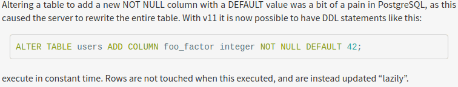

Мигрируй вчера
Миграции данных в продуктовой разработке

Naumen Contact Center
- Сервисная архитектура (~20 сервисов)
- Несколько сервисов работают с БД
- PostgreSql / Oracle
- Разные сервисы - разные БД (теоретически)
PMS
- Система управления проектами (PMS)
- Монолитное веб-приложение, Java
- Собственный механизм миграций
- > 300 таблиц в PostgreSQL/Oracle
NCC
- Тиражируемый продукт
- NCC установлен на инфраструктуре клиентов (On Premise)
- Иногда нет доступа
- Мажорные релизы - раз в год/полгода
- Минорные - каждые две недели
- Мы мигрируем данные
Проблема бизнеса - длинные релизы
- Долгая доставка
- Нет обратной связи
- Нет повторных продаж
Требования бизнеса
- Короткие релизы
- Минимальный простой
- Понимание прогресса обновления
- Сократить трудозатраты
- Возможность быстрого отката
Формулировка проблемы
- Короткие релизы ->
- Релизов в год больше ->
- Столько версий невозможно поддерживать ->
- Клиентов надо обновлять часто ->
- 3-4 обновления в год для клиента ->
- 300-400 обновлений для нас
Пример


Как выглядят обновления сейчас

Что может пойти не так

Что может пойти не так

Мировой опыт
Blue Green Deployment

Blue Green Deployment

Blue Green для БД

Особенности
- Изменение схемы во время работы
- Изменение схемы != Обновление приложения
- Обратная совместимость - автоматически
- Простой откат - автоматически
Проблемы
- 3! версии приложения для одного обновления
- + 2 изменения схемы
- Как выпускать такие релизы?
- Как обновлять десятки/сотни клиентов?
Миграция продукта
Идея #1: Фоновые миграции

Идея #1: Фоновые миграции
- Пока идут миграции данные есть и v1, и v2
- Нельзя выполнять долгие блокирующие операции с БД
- Нельзя ставить NotNull на старте
Риски
- Поддержка 2-х версий кода и данных
- Частичная неработоспособность
Идея #1: Фоновые миграции
Нужна изоляция кода при работе с БД
Идея #2
- Сначала мигрируем БД
- Потом обновляем!
Идея #2: Предмиграции

Принципы
- Не менять данные
- Не вызывать деградацию
- Не блокировать БД
- Разбить на пачки, чтобы останавливать
- Уметь запускаться многократно
- Миграции после старта - доделывают
А если данные изменились?
- Версия данных в каждой строке
- Триггеры
Часть приложения или новый сервис?
Часть приложения или новый сервис?
Аргументы "За часть приложения"
- Инфраструктура проще
- Инженерам проще (=дешевле)
- Кнопка в GUI
Часть приложения или новый сервис?
Аргументы против "отдельного сервиса"
- Для мажорного обновления нужно минорное
- В случае ошибки - минорное обновление
- Отсутствует изоляция производительности
- В случае проблем - рестарт приложения
Отдельный сервис
- Есть веб-интерфейс
- Доступен из приложения (проксируется)
- Для инженера/администратора: почти как часть приложения
Как выглядит сервис?
- Java, Spring boot
- Web, REST, JMX
- Статистика
- Можно остановить в процессе
- Можно продолжить выполнение
- Проверка версии мигрируемой базы
А что с разработчиками и тестовыми стендами?
- Возможно обновление без предмигратора
Будет две версии миграций?
- В общем случае - да. Для PMS - нет
- PMS - состоит из модулей
- Модуль для миграций
- Его используют PMS и Предмигратор
Что можно делать в базе?
- Добавление колонки
- Удаление колонки (PG)
- Создание индекса с флагом CONCURRENTLY (PG) / ONILNE (ORA)
- Удаление ограничения
- Добавить дефолтное значение в существующую колонку
Что нельзя делать в базе?
Добавлять индекс
- Делай CONCURRENTLY/ONLINE
Что нельзя делать в базе?
Менять тип/имя колонки
Что нельзя делать в базе?
Добавлять новую колонку с дефолтным значением
- Добавить новую колонку
- Добавить дефолтное значение
- Заполнить колонку дефолтным значением
Что нельзя делать в базе?
Но в PostgreSQL 11 уже можно

Что нельзя делать в базе?
Добавлять новую колонку NOT NULL
- Создать новую таблицу
- Добавить NOT NULL колонку
- Писать в обе таблицы
- Скопировать данные...
Что нельзя делать в базе? (PG)
Добавлять новую колонку UNIQUE
- Добавить колонку
- Добавить уникальный индекс (concurrently)
- Добавить ограничение на таблицу
- UNIQUE USING INDEX
Что нельзя делать в базе? (PG)
VACUUM FULL
А минусы?
- Много места в БД
- Нет отката после запуска
Возможность отката
теоретическая
Сопутствующие приобретения
- Простое тестирование миграций во время разработки
- Запуск на любом стенде
- Запуск на тестовой базе клиентов
- Мигрировать можно и днём
Результат
- Вышло несколько релизов с предмиграциями
- Ошибки исправляем до выпуска версии
- Самая долгая миграция: 14 часов
- Одна идёт ~14 часов, другая - 30 секунд
- Можем позволить себе длинные миграции
- Клиенты и инженеры спокойнее относятся к обновлениям